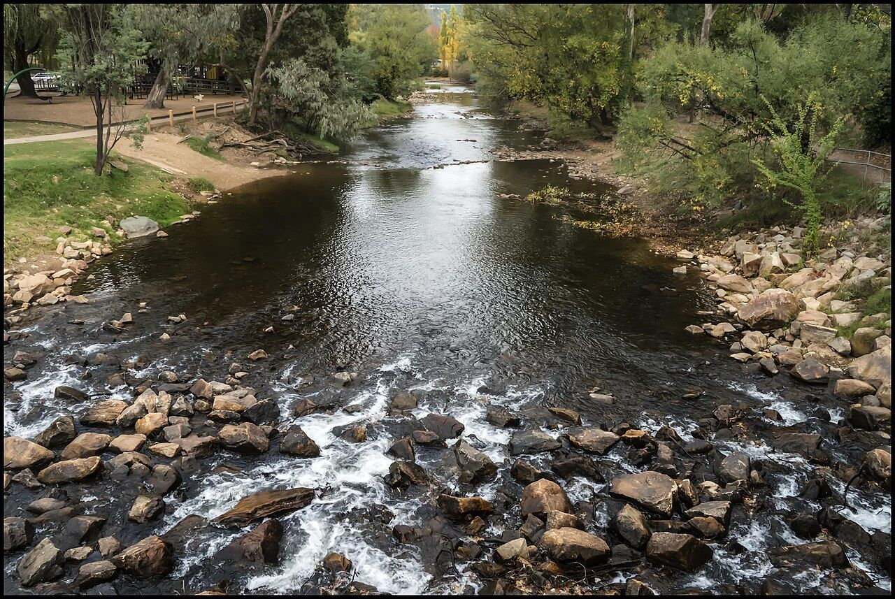
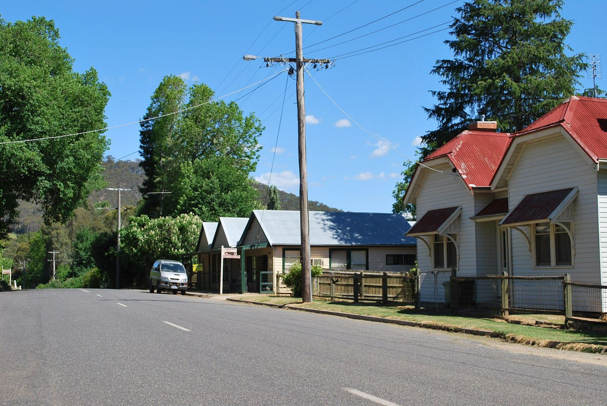
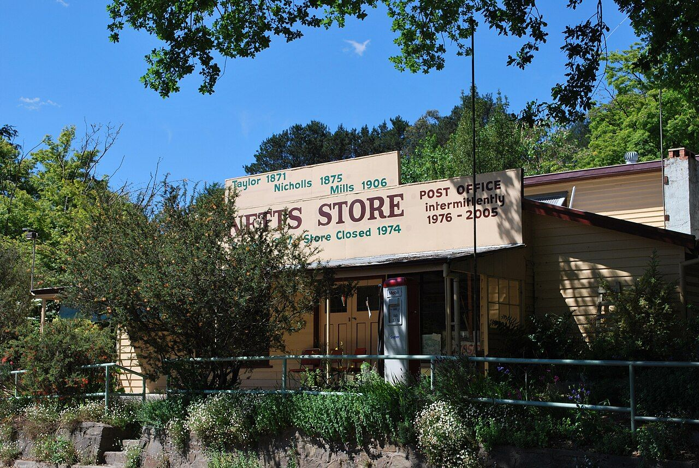

You don't need to go far for a good walk. Some of the best short walks in the valley start in Porepunkah and Bright, a few minutes from our gate, and most take an hour or less.
Close to the cottages
The Porepunkah River Walk starts at Riverside Park in Porepunkah and follows the Ovens. It's flat and easy, 2.5 km and about 45 minutes. Walk it quietly in the early morning and you might see a platypus.
The Apex Lookout walk starts 1.5 km up Mount Porepunkah Road. It's 3 km and about an hour and a half, and steep in places, climbing to a view back over the valley.

In and around Bright
- The Canyon Walk starts at Howitt Park and follows the Ovens River: 2.5 km and 45 minutes, or 4.9 km and an hour and a half for the longer loop.
- Huggins Lookout is short and steep: 1.6 km and about an hour, with a view over Bright.
- The Diggings at Wandiligong is a gentle 2 km walk, about 30 minutes, through old gold-mining country.
- The Wandi Walk runs 11 km from Bright up the valley to Wandiligong, about three hours one way. Arrange a lift back, or walk both ways.


On Mount Buffalo
The walk to Ladies Bath Falls and Eurobin Falls starts on the lower slopes of the mountain, a short drive from Porepunkah. It's 560 metres and about 20 minutes to the falls, with a rock pool that's good for a swim on a hot day. Take care, as the rocks are slippery.
At the top there's the Gorge Heritage Walk, the Lake Catani circuit and the climb up the Horn. Our Mount Buffalo guide has the details. Remember dogs can't come into the national park.

Useful links
- Visit Bright Walks and Trails Guide (PDF), with maps for each walk
- Ladies Bath and Eurobin Falls, Parks Victoria
- Bright Visitor Information Centre, for printed maps
Top photo: Tonguch ozluk, CC BY-SA 4.0, via Wikimedia Commons.


.jpg){kind=link}